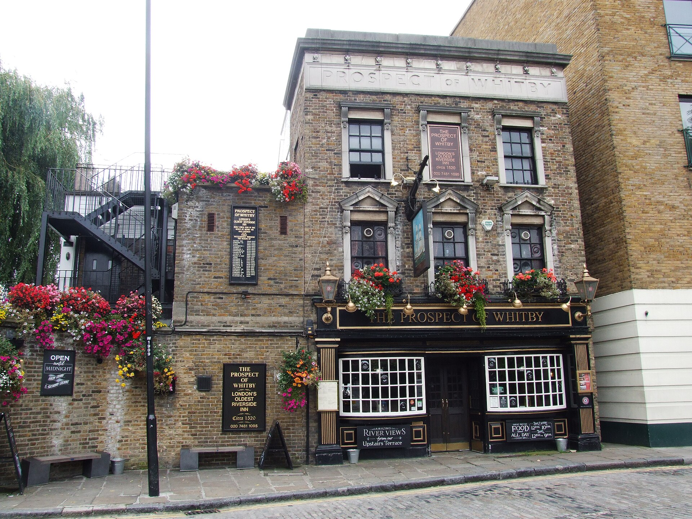
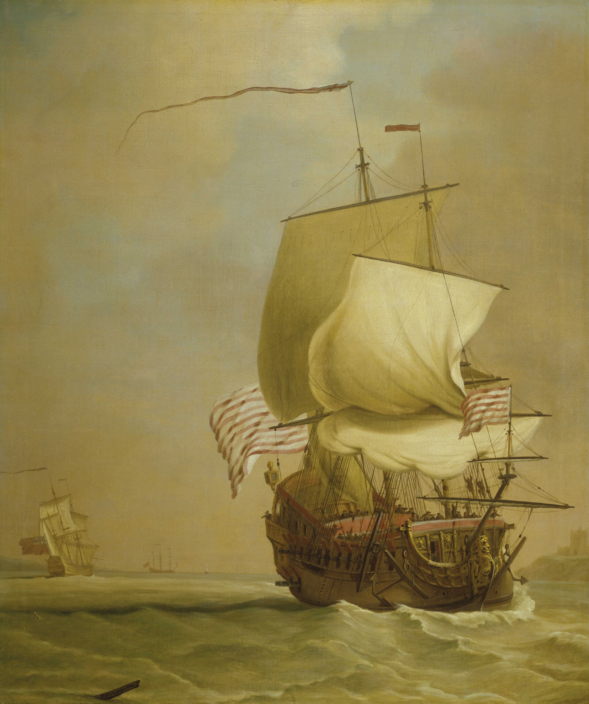
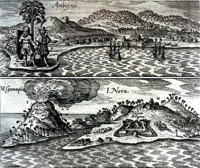
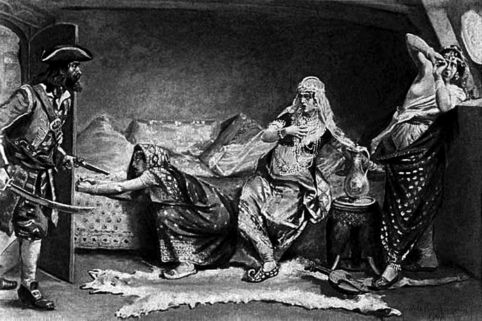
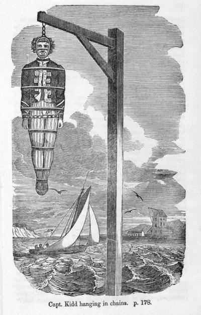
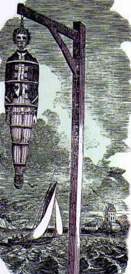

Appendix
Visual Credits
The edition uses local copies of public-domain, CC0, no-restrictions, and selected Creative Commons archival images, plus one generated cover illustration. Credits are retained here so chapter captions can stay readable.

The Front-Row Seat cover illustration
AI-generated painted cover illustration: Wapping, the Thames, old timber, ships in mist, and low historic riverside buildings across the water.
Source: Generated for this edition
Creator: OpenAI image generation
Date: 2026
License: Generated image

Prospect of Whitby at night
The Prospect of Whitby after dark: the living room of the book seen as a present-day threshold into its older river history.
Source: Private photograph supplied by the author.
Creator: Author photograph
Date: Unknown
License: Author-owned photograph


East Indiaman off St Helena
An East Indiaman under sail: the kind of vessel that turns the book's paper contracts into distance, cargo, and risk.
Source: File:East Indiaman Cirencester off St Helena 1795.jpg
Creator: Robert Dodd (artist 1748–1815)
Date: 1795
License: Public domain

An English East Indiaman
A Company-era merchant ship shown as maritime power rather than romance.
Source: File:An English East Indiaman RMG BHC1011.tiff
Creator: Peter Monamy
Date: circa 1720 date QS:P571,+1720-00-00T00:00:00Z/9,P1480,Q5727902
License: Public domain

East India Company coat of arms
The corporate mark behind many of the book's ledgers, voyages, and silences.
Source: File:Coat of arms of the East India Company.svg
Creator: TRAJAN 117 This W3C-unspecified vector image was created with Inkscape .
Date: 2011-06-28
License: Public domain


Map of Surat, 1730
Surat, one of the Company's early Indian footholds, drawn as a trading city before the forts hardened.
Source: File:Map of Surat 1730.jpg
Creator: Anonymous
Date: 1730
License: Public domain


Amboyna
Amboyna enters the book as trauma, paperwork, and a pivot away from the Spice Islands.
Source: File:Amboyna.jpg
Creator: Unknown author Unknown author
Date: 1744
License: Public domain

Fort Victoria, Amboyna
Amboyna's fortifications: the wall behind the word 'factory' when trade turns coercive.
Source: File:AmboynaFort1655.jpg
Creator: Unknown
Date: 1655 :1655
License: Public domain

Every engaging the Great Mughal's ship
The raid on the Ganj-i-Sawai made piracy, empire, and Company trade answer to the same court of consequences.
Source: File:Every engaging the Great Mogul's Ship.jpg
Creator: Charles Ellms
Date: 1837
License: Public domain


Captain Kidd hanging
Kidd's execution turns legal ambiguity into public theatre on the Wapping foreshore.
Source: File:Captain Kidd hanging.jpg
Creator: Unknown
Date: Unknown
License: Public domain

Captain Kidd
Kidd's printed face outlived the missing papers and the snapped rope.
Source: File:Kidd compressed.jpg
Creator: The History Blog
Date: 2011-12-10
License: Public domain


East India Dock, 1806
The dock system as imperial infrastructure: cargo, customs, and state power made local.
Source: File:East India dock 1806.jpg
Creator: William Daniell
Date: 1808
License: Public domain

East India Company docks, 1844
The East India Company docks in 1844: the river converted into managed imperial intake.
Source: File:East India Company docks.jpg
Creator: Unknown author Unknown author
Date: 1844
License: Public domain

East India Export Dock, 1843
The export dock made the Company's world visible from London's river edge.
Source: File:East India Export Dock (1843).jpg
Creator: Unknown author Unknown author
Date: 1843-01-01
License: Public domain

Boston Tea Party
The tea hoard leaves Wapping's ledgers and returns as politics in Boston harbour.
Source: File:Boston Tea Party-Cooper.jpg
Creator: W.D. Cooper
Date: Unknown
License: Public domain

Tea chest with caddies
Tea as a domestic luxury with a global account underneath it.
Source: File:Tea chest with tea caddies MET DT2933.jpg
Creator: Unknown
Date: circa 1790 date QS:P571,+1790-00-00T00:00:00Z/9,P1480,Q5727902
License: CC0

Tea chest
The commodity made small enough to sit on a table, though the route behind it spans oceans.
Source: File:Tea Chest MET 121779.jpg
Creator: Unknown
Date: 1762–63
License: CC0

Bligh's open boat
Bligh's launch compresses distance, rationing, discipline, and survival into twenty-three feet.
Source: File:Bligh open boat.jpg
Creator: Robert Cleveley (1747-1809)
Date: 18th or 19th century
License: Public domain

Breadfruit tree
Breadfruit: the plant behind the Bounty's voyage, and behind the plantation arithmetic it served.
Source: File:Breadfruit tree.jpg
Creator: Encyclopedia Britannica
Date: Unknown
License: Public domain

Fuchsia denticulata
The fuchsia thread gives the book one living inheritance not built on extraction.
Source: File:Fuchsia denticulata.jpg
Creator: William Jackson Hooker (1785-1865)
Date: 1845
License: Public domain


Destruction of opium, 1839
Lin's destruction of seized opium marks the moment a commercial triangle becomes a shooting war.
Source: File:Destruction of opium in 1839.jpg
Creator: Chinese artist
Date: 19 th century date QS:P,+1850-00-00T00:00:00Z/7
License: Public domain

Cinchona bark
Cinchona bark, quinine, and gin: the medicinal edge of empire's daily rituals.
Source: File:The cinchona barks (PL. V) BHL6677295.jpg
Creator: Flückiger, Friedrich A.; Power, Frederick B.
Date: 1884
License: Public domain


Gin Lane
Gin Lane brings the drink's social cost into the book's longer argument about appetite and profit.
Source: File:William Hogarth - Gin Lane.jpg
Creator: William Hogarth
Date: between 1750 and 1751 date QS:P571,+1750-00-00T00:00:00Z/8,P1319,+1750-00-00T00:00:00Z/9,P1326,+1751-00-00T00:00:00Z/9 (Original); this print comes from a reengraving circa 1806-09 by Samuel Davenport from Hogarth's originals
License: Public domain

Cutty Sark, 1871
Cutty Sark in her prime, before speed, violence, and obsolescence enter the chapter's account.
Source: File:Cutty Sark, 1871.jpg
Creator: Anonymous Unknown author
Date: 1871
License: Public domain

Whitechapel murders map
A public-domain map of the Whitechapel murder sites, included for geography, not spectacle.
Source: File:Whitechapel murders.jpg
Creator: Ordnance Survey, modified by uploader
Date: 1894, amended 2009
License: Public domain

Booth map of Whitechapel
Booth's poverty map turns streets into social categories, a different kind of ledger.
Source: File:Booth map of Whitechapel.jpg
Creator: Charles Booth
Date: 1889
License: Public domain

London Blitz
The docks burning in 1940: the imperial engine room made target and ruin.
Source: File:London Blitz 791940.jpg
Creator: New York Times Paris Bureau Collection.
Date: 1940-09-07
License: Public domain


Generated Illustration Expansion Briefs
Future generated illustrations should stay object- or scene-led unless a fixed character reference sheet is created first.
- Bounty interlude chapter plate: Painted historical illustration of nineteen exhausted sailors in a twenty-three-foot open boat on a grey ocean, no named portrait likeness, restrained popular-history style, no text.
- Cutty Sark chapter plate: Painted historical illustration of a tea clipper becalmed on the Java Sea at dawn, seen from a distance, no identifiable people, muted maritime palette, no text.
- 1888 object study: Painted object study of a folded wooden fan, laundry linen, fog-damp cobbles, and a fuchsia cutting; no people, no violence, restrained historical realism.
- 1770 famine ledger: Painted still life of a Bengal revenue ledger, empty rice bowl, monsoon-dark sky seen through a window, no bodies, no text, serious popular-history tone.
{kind=link}
{kind=link}
{kind=link}
,_RP-P-2018-2131.jpg){kind=link}
,_RP-P-2018-2132.jpg){kind=link}
{kind=link}
{kind=link}
{kind=link}
{kind=link}
{kind=link}
.png){kind=link}
{kind=link}
{kind=link}
{kind=link}
{kind=link}
{kind=link}
{kind=link}
{kind=link}
.jpg){kind=link}
{kind=link}
{kind=link}
{kind=link}
{kind=link}
{kind=link}
{kind=link}
{kind=link}
{kind=link}
_BHL6677295.jpg){kind=link}
{kind=link}
{kind=link}
{kind=link}
{kind=link}
{kind=link}
{kind=link}
_(29282975318).jpg){kind=link}
{kind=link}
{kind=link}
_against_gold_and_silver_in_the_presence_of_Mahabat_Khan_and_Khan_Jahan..jpg){kind=link}